Organizational Change — Leading the AI Transformation
The Hardest Part Isn’t Technical
You can design the perfect AI architecture. You can pick the right models, build an elegant RAG pipeline, set up a gateway that routes requests with sub-second latency, and implement monitoring that would make an SRE weep with joy. None of it matters if the organization isn’t ready to receive it. I’ve watched brilliant technical designs gather dust because the people side of the equation was never addressed — teams that didn’t trust the system, executives who expected magic, middle managers who saw AI as a threat to their headcount. This chapter covers what most architecture books skip entirely: the human side of AI transformation, which, in my experience, is where roughly eighty percent of the real difficulty lives.
The Architect’s Expanding Role
Before AI
After AI
If you compare those two diagrams, you’ll notice something important: the “After AI” version doesn’t replace any of the traditional responsibilities. It adds an entirely new layer on top of them. You’re not just adding AI to your tech stack — you’re fundamentally expanding what it means to be an enterprise architect. Where you once focused primarily on systems and standards, you now find yourself in conversations about ethics, talent development, cross-functional enablement, and strategic roadmapping at a level that would have seemed outside your remit just a few years ago.
This expansion can feel overwhelming at first, and that’s a perfectly reasonable reaction. The key is to recognize that you don’t need to become an expert in all of these areas overnight. What you do need is enough fluency to ask the right questions, make informed decisions, and guide teams that will develop deep expertise in each domain. Think of yourself less as the person who does everything and more as the person who ensures everything connects coherently.
Building the AI Team
Getting the team structure right is one of the most consequential decisions you’ll make early in an AI transformation. Get it wrong, and you’ll either create a bottleneck that starves the business of AI capabilities, or you’ll scatter talent so thinly that no one achieves anything meaningful. There are three common approaches, each with genuine merit depending on where your organization sits on the maturity curve.
Team Structure Options
Option 1: Centralized AI Team (Center of Excellence)

The centralized model puts all of your AI talent in a single team — a Center of Excellence — that serves the entire organization. This approach works well in the early days because it gives you consistent standards, a shared body of knowledge that grows with every project, and efficient use of what is almost certainly a very scarce talent pool. When you only have three or four people who genuinely understand how to deploy an LLM-based system in production, it makes no sense to scatter them across different business units where they’ll each reinvent the wheel in isolation.
The downside is real, though. A centralized team inevitably becomes a bottleneck. Business units start queuing up for access, and the team can drift into an “ivory tower” mentality where they optimize for technical elegance rather than business impact. They may also lose touch with the messy realities of each domain, building solutions that look beautiful in a demo but miss the mark when applied to the actual workflow. This model is best suited for the first year or two of your AI journey, when the priority is establishing foundations rather than scaling across the enterprise.
Option 2: Embedded AI Engineers

The embedded model takes the opposite approach: you place AI engineers directly inside each business unit, where they sit alongside the product teams and share the same priorities, deadlines, and domain knowledge. This has enormous advantages in terms of speed and relevance. An AI engineer who spends every day immersed in the claims processing workflow will build better AI solutions for claims processing than someone parachuting in from a central team for a six-week engagement.
However, this model has its own failure modes. Without a unifying force, each business unit tends to develop its own standards, its own tooling, its own infrastructure. You end up with three different vector databases, four different prompt management approaches, and no shared learning between teams. It’s also brutally difficult from a recruitment standpoint — you need enough AI talent to staff every business unit, and that talent simply may not exist in the market at the scale you need. This approach works best in mature organizations that have already established strong platform foundations and clear architectural standards that embedded engineers can follow without constant oversight.
Option 3: Hub and Spoke (Recommended)
┌───────────────────────┐
│ AI Platform Team │ ← Sets standards, builds shared infra
│ (Architects, MLOps, │
│ Platform Engineers) │
└───┬──────────┬────────┘
│ │
┌───────▼──┐ ┌──▼────────┐
│ BU-A │ │ BU-B │ ← AI engineers embedded in business units
│ AI Team │ │ AI Team │ Use shared platform, follow standards
└──────────┘ └───────────┘The hub-and-spoke model is, in my experience, the one that works best for most organizations once they’ve moved past the initial experimentation phase. The “hub” is a central AI platform team — architects, MLOps engineers, and platform builders — who set the standards, maintain the shared infrastructure, and ensure consistency across the organization. The “spokes” are AI engineers embedded in each business unit, close to the problems, iterating quickly, and deeply familiar with their domain.
What makes this model powerful is that it gives you the best of both worlds. The embedded engineers bring business context and speed; the platform team brings consistency, governance, and shared tooling that prevents duplication of effort. An AI engineer in the supply chain team doesn’t need to figure out how to set up model monitoring from scratch — the platform team has already built that capability, and the embedded engineer simply plugs into it.
The trade-off is that this model requires a relatively mature AI platform to function well, and there’s genuine coordination overhead in keeping the hub and spokes aligned. You need regular touchpoints, clear documentation, and a culture where the embedded engineers see the platform as an enabler rather than a constraint. But once those pieces are in place, this structure scales remarkably well.
Key Roles You Need
As you build out your AI capability, there are several roles that need to be filled — some of which probably already exist in your organization in some form, and others that may be entirely new.
| Role | What They Do | Where to Find Them |
|---|---|---|
| AI Enterprise Architect | You — design AI integration, governance, platform | That’s you (reading this book) |
| ML Engineer | Build and deploy models and pipelines | Hire or retrain backend engineers |
| Data Engineer | Build data pipelines for AI | Likely already have them |
| AI Product Manager | Define AI-powered features, manage trade-offs | Retrain existing PMs |
| Prompt Engineer | Design and optimize LLM prompts | New role — train internally |
| AI Ethics Lead | Responsible AI policies and audits | Legal/compliance + technical hybrid |
The AI Enterprise Architect — that’s you, the person reading this book — is responsible for the overall design of AI integration, governance, and platform strategy. You’re the connective tissue between all the other roles, ensuring that individual efforts add up to something coherent rather than a collection of disconnected experiments.
ML Engineers are the people who actually build and deploy models and pipelines. In many organizations, your best bet for finding them is to retrain strong backend engineers who already understand production systems, testing, and operational reliability. These skills transfer remarkably well, and the ML-specific knowledge can be acquired through focused training.
Data Engineers are critical because every AI system is ultimately only as good as the data flowing into it. The good news is that most organizations already have data engineers — the adjustment is helping them understand the specific requirements that AI workloads place on data pipelines, such as the need for high-quality embeddings, consistent document chunking, and metadata that supports retrieval.
AI Product Managers are an often-overlooked role, but they’re essential. Someone needs to define what the AI-powered features should actually do, manage the trade-offs between accuracy and speed, and make judgment calls about when AI output is “good enough” for a given use case. Your existing product managers can grow into this role, but they need deliberate exposure to what AI can and cannot do.
Prompt Engineers represent a genuinely new discipline, and one that’s still evolving rapidly. The best approach for most organizations is to develop this capability internally — people who already understand your business domain and your customers’ language will write better prompts than someone hired purely for technical prompt engineering skills.
Finally, the AI Ethics Lead sits at the intersection of legal, compliance, and technology. This person ensures that your AI systems are fair, transparent, and aligned with both regulatory requirements and your organization’s values. It’s a role that requires a rare combination of technical understanding and policy thinking, and it’s one that will only become more important as AI becomes more deeply embedded in business-critical workflows.
Managing Stakeholder Expectations
The Hype Problem
Here’s a scenario that has played out in virtually every organization I’ve worked with: the CEO sees a ChatGPT demo — maybe at a conference, maybe a board member forwarded a particularly impressive LinkedIn post — and now they want “AI everywhere.” They want it in customer service, in product development, in finance, in HR, and they want it yesterday. Your job, as the architect, is to channel that enthusiasm into achievable outcomes without extinguishing it entirely. That enthusiasm is actually a precious resource — executive sponsorship is one of the biggest predictors of AI program success — but it needs to be shaped and directed rather than left to run wild.
What executives typically expect is something close to science fiction: AI that reads minds, replaces entire departments, and generates billions in new revenue with minimal investment. What AI actually delivers today is more prosaic but still enormously valuable — automation of routine tasks, dramatically better search across enterprise knowledge, faster document processing, and assisted decision-making that helps human experts work more quickly and consistently. The gap between expectation and reality is where organizational disappointment festers, and closing that gap is one of your most important early responsibilities.
There are four strategies that I’ve seen work consistently well for bridging this gap.
First, show rather than tell. Build a working demo in two weeks — not a polished product, but a functional prototype that does something real. A chatbot that actually answers questions about your company’s products, drawing on your internal documentation, is worth more than fifty slides of architecture diagrams and ROI projections. When an executive can type a question and get a useful answer, the conversation shifts from “can AI really do this?” to “how quickly can we scale this up?” That’s exactly the conversation you want to be having.
Second, frame AI as augmentation rather than replacement. The language you use matters enormously. Telling a VP of Operations that “AI will replace your team” will trigger immediate resistance, even if the underlying analysis is sound. Saying “AI will help your team handle three times the volume without adding headcount” conveys the same economic benefit but positions AI as a tool that makes their people more effective rather than a threat that makes their people redundant. This isn’t just a communication tactic — in most cases, augmentation is genuinely the more accurate description of what AI does in practice.
Third, set cost expectations early and explicitly. One of the most common sources of executive frustration is discovering that an AI system costs significantly more to run than anyone anticipated. You can prevent this entirely by being upfront from the beginning: “This AI feature will cost approximately X dollars per month to run at the projected volume.” That transparency builds trust and prevents the kind of sticker shock that can turn an AI champion into an AI skeptic overnight.
Fourth, publish a roadmap that gives stakeholders a clear sense of trajectory. Quick wins in the first quarter demonstrate value and build momentum. Strategic integration in quarters two and three shows how AI connects to core business processes. Platform investment in quarter four sets the foundation for sustainable scaling. Stakeholders don’t just need to see what you’re delivering — they need to see where you’re heading and feel confident that there’s a thoughtful plan behind the execution.
Handling Resistance
Resistance to AI adoption comes in many forms, and the most important thing you can do is treat it as legitimate rather than dismissing it as obstruction. In most cases, the people raising concerns have valid reasons rooted in genuine experience, and addressing those reasons directly is far more effective than trying to steamroll past them.
| Source of Resistance | Root Cause | Your Response |
|---|---|---|
| “AI will take our jobs” | Fear | Show AI augmenting their work, not replacing it. Involve them in design. |
| “Our data isn’t ready” | Valid concern | Agree, and show how the AI project will drive data cleanup. |
| “We tried ML before, it failed” | Past trauma | Show what’s changed (LLMs are fundamentally different from 2018-era ML). |
| “We don’t have the skills” | Skill gap | Start with managed services, upskill in parallel. |
| “It’s too expensive” | Budget concern | Show the cost framework from Chapter 12. Start small. |
When someone says “AI will take our jobs,” they’re expressing a fear that is both deeply personal and entirely rational given the media narrative around AI. The most effective response is to involve those people directly in the design process. When a claims adjuster helps define how AI should assist with claims review, they see firsthand that the AI handles the routine cases while they focus on the complex, judgment-heavy ones. They shift from feeling threatened to feeling empowered, and they become some of your strongest advocates.
When someone says “our data isn’t ready,” they’re usually right — and you should say so. But you should also reframe the relationship between AI and data quality. In many organizations, an AI project is the single most effective catalyst for data cleanup, because it creates a concrete, high-visibility reason to fix the data issues that everyone has been tolerating for years. The AI project doesn’t wait for perfect data; it drives the organization toward better data as a natural byproduct of making the AI work well.
The “we tried ML before and it failed” objection deserves particular empathy because it often reflects genuinely painful experience. Many organizations invested heavily in machine learning initiatives between 2016 and 2020, built elaborate data science teams, and ultimately saw very few models make it to production. What’s important to communicate — without being dismissive of that experience — is that LLMs represent a fundamentally different paradigm. The barrier to getting value from AI has dropped dramatically. You don’t need six months of feature engineering and model training to get a useful result; you can get meaningful value from a well-designed prompt and a good retrieval pipeline in a matter of weeks.
AI Skills Development
Building an AI-capable organization requires deliberate investment in skills development at every level of the org chart. The mistake I see most often is treating this as a purely technical challenge — sending the engineering team to a machine learning bootcamp and calling it done. In reality, architects, developers, and business stakeholders each need different skills, at different depths, learned through different methods.
For Your Architecture Team
Your architecture team — including you — needs to develop a particular blend of conceptual understanding and practical fluency. The goal isn’t to turn every architect into a machine learning researcher; it’s to ensure that they can make informed design decisions, evaluate trade-offs, and have productive conversations with the specialists on their teams.
| Skill | Priority | How to Learn |
|---|---|---|
| How LLMs work (conceptual) | High | This book, chapters 1-3 |
| Prompt engineering basics | High | Hands-on practice (2-3 days) |
| RAG architecture | High | Build a demo (1 week) |
| AI cost modeling | High | Chapter 12 + spreadsheet exercise |
| MLOps concepts | Medium | Chapter 6 + MLflow tutorial |
| Python basics | Medium | 2-week intensive (for notebook fluency) |
| Fine-tuning concepts | Low | Chapter 10 (conceptual understanding) |
Understanding how LLMs work at a conceptual level is non-negotiable — you need to grasp what these models are good at, where they fail, and why, so that your architectural decisions are grounded in reality rather than marketing materials. Prompt engineering basics and RAG architecture are equally high-priority because they underpin the vast majority of enterprise AI applications you’ll be designing in the near term. AI cost modeling, covered in depth in the previous chapter, is something every architect should be able to do with confidence, because cost is often the factor that determines whether an AI initiative survives past its pilot phase.
MLOps concepts and Python basics sit at medium priority — important for fluency and the ability to work hands-on with notebooks and deployment pipelines, but not strictly required for making good architectural decisions. Fine-tuning is lower priority for most architects because the situations that genuinely call for fine-tuning are rarer than you might think, and the decision to fine-tune is typically informed by the results of simpler approaches that should be tried first.
For Your Development Teams
Your developers need a more hands-on skill set focused on building and integrating AI capabilities into the applications they’re already responsible for.
| Skill | Priority | How to Learn |
|---|---|---|
| Calling LLM APIs | High | 1-day workshop + practice |
| Prompt engineering | High | 2-day workshop + prompt library |
| RAG implementation | Medium | 1-week sprint building internal Q&A |
| Vector databases | Medium | Tutorial + hands-on |
| Guardrails and safety | High | Security team training (1 day) |
The most important thing for developers is getting comfortable calling LLM APIs and writing effective prompts, because these are the building blocks of virtually every AI feature they’ll be asked to implement. A one-day workshop that gets them calling an API, experimenting with different prompts, and seeing how small changes in prompt design produce dramatically different outputs is one of the highest-return investments you can make. Pair that with a curated prompt library — a collection of proven prompt templates for common tasks — and your developers will be productive surprisingly quickly.
Guardrails and safety deserve special mention here because they’re high-priority but often overlooked in skills development plans. Every developer building AI-powered features needs to understand how to prevent prompt injection, how to validate AI output before it reaches users, and how to implement appropriate content filtering. A single day of focused training, ideally led by your security team, can prevent the kind of incidents that erode organizational trust in AI.
For Business Stakeholders
Your business stakeholders — the product managers, operations leaders, and executives who will ultimately decide how AI gets used — need a different kind of education. They don’t need to understand transformer architectures or vector similarity search. They need to develop accurate intuitions about what AI can and cannot do, how to evaluate whether AI output is trustworthy, and how to think about the ethical implications of deploying AI in their domains.
| Skill | Priority | How to Learn |
|---|---|---|
| What AI can and can’t do | High | Lunch & learn series |
| How to evaluate AI output | High | Guided exercises with real examples |
| AI ethics basics | High | Workshop with case studies |
| Prompt writing for business users | Medium | 2-hour hands-on session |
A lunch-and-learn series works well for the foundational “what AI can and can’t do” knowledge because it’s low-commitment, can be spread over several weeks, and creates a regular forum for questions and discussion. Guided exercises with real examples — showing stakeholders actual AI outputs alongside ground truth and asking them to evaluate accuracy, completeness, and relevance — build the critical evaluation skills that prevent organizations from blindly trusting AI output. And a workshop on AI ethics, built around case studies drawn from your own industry, ensures that the people making deployment decisions understand the responsibilities that come with putting AI in front of customers or using it to inform high-stakes business decisions.
The AI Transformation Roadmap
Transformation doesn’t happen all at once, and attempting to do everything simultaneously is a reliable way to accomplish nothing. The organizations that succeed with AI follow a phased approach that builds capability progressively, with each phase creating the foundation for the next. Here’s a roadmap that has worked well across a range of industries and organizational sizes.
Phase 1: Foundation (Months 1-3)
The first three months are about establishing the basics — getting the right person in the architect seat, understanding what you’re working with, and proving that AI can deliver real value in your specific context. You should appoint an AI architect (and if you’re reading this book, that person is probably you) who has the authority and the organizational access to drive decisions across business units. At the same time, conduct an honest assessment of your data readiness — not a six-month data strategy exercise, but a practical evaluation of whether the data you need for your first use cases is accessible, clean enough to be useful, and governed in a way that permits AI consumption.
During this phase, build your first AI prototype. The best candidates are typically a RAG system over internal documentation or a document classification workflow — something that delivers visible value quickly and teaches your team the end-to-end mechanics of deploying an AI system. In parallel, establish the basics of AI governance: a policy document that covers acceptable use, a risk classification framework for AI use cases, and a lightweight review process that can evolve as your program matures. Finally, start your skills development program early. Don’t wait until you have a full team and a mature platform — begin building AI fluency across the organization from day one, because cultural readiness takes time and benefits enormously from an early start.
Phase 2: Scale (Months 4-9)
With the foundation in place, months four through nine are about moving from experimentation to operational reality. The goal is to deploy three to five AI use cases in production — not as prototypes or demos, but as genuine production systems with monitoring, support processes, and clear ownership. This is where you build the shared AI platform — the gateway, the monitoring infrastructure, the prompt registry, and the other components discussed in earlier chapters — that will enable business units to build AI applications without each team solving the same infrastructure problems independently.
This is also the right time to establish the hub-and-spoke team structure, with a central platform team setting standards and building shared capabilities while embedded AI engineers in each business unit apply those capabilities to domain-specific problems. Implement cost monitoring and optimization so that you have clear visibility into what your AI systems cost and the levers available to manage those costs. And conduct your first responsible AI audit — a systematic review of your deployed AI systems against your governance policies, with a focus on identifying gaps and areas for improvement.
Phase 3: Mature (Months 10-18)
In the maturity phase, AI stops being a special initiative and starts becoming part of how the organization operates. AI-augmented workflows should be embedded across major business processes — not as bolt-on experiments, but as integral parts of how work gets done. You should be deploying more advanced patterns, such as multi-step agents and multi-model routing, where the business case justifies the additional complexity. The AI platform should evolve into a self-service capability where business units can build and deploy AI applications within the guardrails you’ve established, without requiring direct involvement from the central team for every project.
Continuous improvement becomes a core discipline in this phase. You should have systematic evaluation processes, regular prompt optimization cycles, and a clear methodology for deciding when a use case warrants retraining or architectural changes. Perhaps most importantly, AI should become a standard part of your architecture review process — not an add-on that gets discussed in separate meetings, but a first-class consideration in every significant design decision, right alongside scalability, security, and cost.
Key Takeaways
- The hardest part of AI transformation is organizational, not technical — the architecture matters, but the people, processes, and culture are where most initiatives succeed or fail.
- A hub-and-spoke team structure, with a central platform team and embedded AI engineers in each business unit, provides the best balance of consistent standards and close business proximity for organizations scaling past initial experiments.
- Managing stakeholder expectations is best accomplished by showing working demos rather than presenting slide decks, and by framing AI as augmentation of human capability rather than replacement of human workers.
- Skills development must happen at all levels of the organization — architects need conceptual fluency and design judgment, developers need hands-on API and prompt engineering skills, and business stakeholders need accurate intuitions about AI capabilities and limitations.
- Following a phased roadmap of Foundation, Scale, and Mature allows the organization to build capability progressively, with each phase creating the conditions for the next, rather than attempting to transform everything at once.
Companion Notebook
 — Build an AI
project ROI calculator. Input your use case parameters (volume, current
cost, error rate) and model the business case for AI implementation with
different adoption scenarios.
— Build an AI
project ROI calculator. Input your use case parameters (volume, current
cost, error rate) and model the business case for AI implementation with
different adoption scenarios.